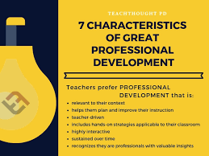

NAVIGATING YOUR JOURNEY
Teaching us the values and how to express ourself
accordingBy respecting yourself as a person
and
extending it others too
Python

Learning how to code by making it easy and simple
When presenting data types and data structures.
We also learnt how the list method that is
list transversal,comprehension,tuple
And dictionary is the collection ofdata items
that has key and values.
MOBILE DEVELOPMENT

learning about variable,strings,intergers,boolean
and operetors So far we been taught
inheristance whereby its enable us to create a
class From existing one by extending its
functionality or reducing code Kotlin class cannot
be inherited but can make a class
inheritable mark with open keyword Override in
kotlin is a method of super class that
is useful when you need to change the defauit
behaviour Flow control has for in statement
loop that is used to iterate over sequence of
items containing
collection or number range.
WEB DEVELOPMENT

Knowing how to do code using different methods
like contractors getter,setter to solved
the problem operators are used as sign value declaration
function is statement containing prototype
of parameters and orders Primitive that are offered by
a specific language and the coercion
IOT
Dealing with the circuit through connecting different
things usingAdruino and breadboard.
Working on different projects making traffic
lights by using Lcd
INDUSTAIAL DESIGN
Through working in many projects by designing them
being creative on the work.Workinby doing
research ideate,prototypes Working by doing research
,research ideate,prototype selecting
and implementing for the right products
There also themes of design whereby Focus:
Select
only the key.
STARTUP101
Being a good enterprenuer byidentifying the
opportunity, mnagment resource,excuting
ideas and making profit.There are also
categories of opportunity that is increasing
the value under product Creating a mass
market by increasing it for more people Convening
more industries and increasing the skills.
Having business deal
with the change
PROFESSIONAL DEVELOPMENT

Teaching us values and skills that enable one
to develop in her professional
career
path Having self confident to express Yourself by
focusing by being self
motivated in
everything your doing.Having marketable
skills that are needed by
becoming passionate
and taking initiative to make step Knowing mission
that connects
the world professionals
to make them more productive and Having key
values that enable
you to success thrived
in workplace by preparing elevator talk and associating
with right crowd.
USER EXEPERIENCE
User Experience is a person's perceptions and
responses that result from the use or
anticipated use of a product, system or service".